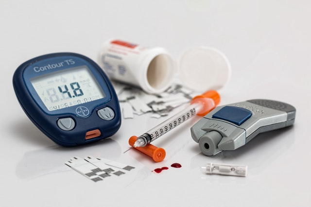

<!-- <button  type="button" routerLink="/newuser">New User</button>
<button  type="button" routerLink="/userdetails">Old User</button>
<button  type="button" routerLink="/olduser">Get User</button>
-->
<div>
	<router-outlet>
		<nav class="navbar navbar-expand-md bg-secondary navbar-dark">
	<div class="container">
		<a class="navbar-brand" href="#">Check Your Health</a>
		<button class="navbar-toggler navbar-toggler-right" type="button" data-toggle="collapse" data-target="#navbarSupportedContent">
			<span class="navbar-toggler-icon"></span>
		</button>

				<button class="btn btn-primary float-right" type="submit" routerLink="/olduser">Search User</button>

	</div>
</nav>
<div class="py-5 text-center " style="background-image: url(./../../../assets/health.jpg);">
	<div class="container py-5" >
		<div class="row">
			<div class="col-md-12">
				<h1 class="display-3 mb-4 text-primary">Health Checkup</h1>
				<p class="lead mb-5">To enjoy good health, to bring true happiness to one's family, to bring peace to all, one must first discipline and control one's own mind</p>
				<a href="#" class="btn btn-lg mx-1 btn-secondary" routerLink="/newuser" >New Patient</a>
				<a href="#" class="btn btn-lg btn-primary mx-1" routerLink="/userdetails">Old Patient</a>
			</div>
		</div>
	</div>
</div>
<div class="py-5 bg-secondary">
	<div class="container">
		<div class="row">
			<div class="col-md-12">
				<h1 class="text-center display-3 text-primary">Diabetes</h1>
				<p class="">Diabetes, often referred to by doctors as diabetes mellitus, describes a group of metabolic diseases in which the person has high blood glucose (blood sugar), either because insulin production is inadequate, or because the body's cells do not respond properly to insulin, or both. Patients with high blood sugar will typically experience polyuria (frequent urination), they will become increasingly thirsty (polydipsia) and hungry (polyphagia).</p>
			</div>
		</div>
	</div>
</div>
<div class="py-5 bg-secondary">
	<div class="container">
		<div class="row">
			<div class="col-md-12">
				<div class="row">
					<div class="col-md-6">
						
						<p class="">Healthy eating for diabetes is healthy eating for the whole family.
Enjoy having regular meals, starting with breakfast first, then lunch and dinner. Space meals no more than 6 hours apart.
Eat a variety of foods in each meal, including healthy fats, lean meats or proteins, whole grains and low-fat dairy.
Choose fiber rich foods such as fruits, vegetables and whole grains as much as possible, like brown bread, bran cereals, whole wheat pasta and brown rice.
Explore alternatives to meat such as lentils, beans or tofu.
Choose calorie-free liquids such as unsweetened tea, coffee or water.
Choose sugar substitutes.</p>
					</div>
					<div class="col-md-6">
						
						<p class="" >Diabetes check ups are an extremely important part of diabetes care.

There are some diabetes checks that you can carry out at home with others offered by the NHS.

These checks are a vital part of weekly, monthly and annual diabetes care. There are some types of diabetes checks that you can carry out at home, and others are offered by the NHS.

This includes glucose control, foot care, weight, and keeping a diary.</p>
					</div>
				</div>
			</div>
		</div>
	</div>
</div>
	</router-outlet>
</div>
